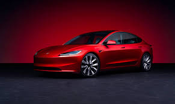

About Elon Musk
Elon Reeve Musk, born on June 28, 1971, in Pretoria, South Africa, is a visionary entrepreneur and inventor. Known for his ambitious goals of colonizing Mars, accelerating the world’s transition to sustainable energy, and integrating artificial intelligence with human life, Musk has consistently pushed the boundaries of what’s possible.
Early Life and Education
Elon Musk moved to the U.S. for higher education, earning degrees in Economics and Physics from the University of Pennsylvania. His journey into tech began with the creation of PayPal, which became a massive success and was sold to eBay. Using the funds from this venture, Musk went on to found SpaceX, Tesla, Neuralink, and The Boring Company.
Founding of SpaceX and Tesla
Each of these companies is driven by his goal of improving humanity's future and reducing existential risks. SpaceX aims to reduce the cost of space travel, while Tesla is leading the global transition to electric vehicles and renewable energy.
Tesla: Revolutionizing Electric Vehicles
In 2004, Musk joined Tesla, a small electric car startup. Under his leadership, Tesla revolutionized the automotive industry by proving that electric vehicles (EVs) could be high-performing, luxurious, and eco-friendly. Tesla's Model S, Model 3, and Model X have set the benchmark for electric cars globally.
In addition to electric vehicles, Tesla is heavily involved in the development of renewable energy technologies such as solar panels and energy storage systems. Through innovations like Powerwall and Solar Roof, Musk aims to build a sustainable energy ecosystem for homes, businesses, and entire cities.
Key Achievements of Elon Musk
- Founded SpaceX in 2002 to reduce the cost of space travel and make humanity multi-planetary.
- Transformed Tesla into the world's leading electric vehicle company with cutting-edge battery technology.
- Pioneered reusable rockets at SpaceX, drastically reducing the cost of space travel.
- Founded Neuralink to explore merging the human brain with artificial intelligence.
- Founded The Boring Company to build tunnels for rapid urban transportation, reducing traffic congestion.
Vision for the Future
Musk’s ultimate goal is to make life multi-planetary by colonizing Mars, ensuring humanity’s survival. He also aims to solve the global energy crisis through sustainable technologies like electric vehicles, solar energy, and energy storage systems.
His vision extends to advancing artificial intelligence through Neuralink, a company dedicated to developing brain-machine interfaces, potentially offering revolutionary solutions for brain diseases, memory loss, and much more.